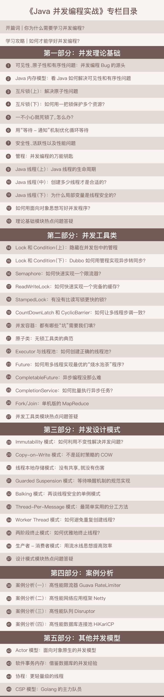

- 00 学习攻略 如何才能学好并发编程？.md.html
- 00 开篇词 你为什么需要学习并发编程？.md.html
- 01 可见性、原子性和有序性问题：并发编程Bug的源头.md.html
- 02 Java内存模型：看Java如何解决可见性和有序性问题.md.html
- 03 互斥锁（上）：解决原子性问题.md.html
- 04 互斥锁（下）：如何用一把锁保护多个资源？.md.html
- 05 一不小心就死锁了，怎么办？.md.html
- 06 用“等待-通知”机制优化循环等待.md.html
- 07 安全性、活跃性以及性能问题.md.html
- 08 管程：并发编程的万能钥匙.md.html
- 09 Java线程（上）：Java线程的生命周期.md.html
- 10 Java线程（中）：创建多少线程才是合适的？.md.html
- 11 Java线程（下）：为什么局部变量是线程安全的？.md.html
- 12 如何用面向对象思想写好并发程序？.md.html
- 13 理论基础模块热点问题答疑.md.html
- 14 Lock和Condition（上）：隐藏在并发包中的管程.md.html
- 15 Lock和Condition（下）：Dubbo如何用管程实现异步转同步？.md.html
- 16 Semaphore：如何快速实现一个限流器？.md.html
- 17 ReadWriteLock：如何快速实现一个完备的缓存？.md.html
- 18 StampedLock：有没有比读写锁更快的锁？.md.html
- 19 CountDownLatch和CyclicBarrier：如何让多线程步调一致？.md.html
- 20 并发容器：都有哪些“坑”需要我们填？.md.html
- 21 原子类：无锁工具类的典范.md.html
- 22 Executor与线程池：如何创建正确的线程池？.md.html
- 23 Future：如何用多线程实现最优的“烧水泡茶”程序？.md.html
- 24 CompletableFuture：异步编程没那么难.md.html
- 25 CompletionService：如何批量执行异步任务？.md.html
- 26 Fork_Join：单机版的MapReduce.md.html
- 27 并发工具类模块热点问题答疑.md.html
- 28 Immutability模式：如何利用不变性解决并发问题？.md.html
- 29 Copy-on-Write模式：不是延时策略的COW.md.html
- 3 个用户来信 打开一个新的并发世界.md.html
- 30 线程本地存储模式：没有共享，就没有伤害.md.html
- 31 Guarded Suspension模式：等待唤醒机制的规范实现.md.html
- 32 Balking模式：再谈线程安全的单例模式.md.html
- 33 Thread-Per-Message模式：最简单实用的分工方法.md.html
- 34 Worker Thread模式：如何避免重复创建线程？.md.html
- 35 两阶段终止模式：如何优雅地终止线程？.md.html
- 36 生产者-消费者模式：用流水线思想提高效率.md.html
- 37 设计模式模块热点问题答疑.md.html
- 38 案例分析（一）：高性能限流器Guava RateLimiter.md.html
- 39 案例分析（二）：高性能网络应用框架Netty.md.html
- 40 案例分析（三）：高性能队列Disruptor.md.html
- 41 案例分析（四）：高性能数据库连接池HiKariCP.md.html
- 42 Actor模型：面向对象原生的并发模型.md.html
- 43 软件事务内存：借鉴数据库的并发经验.md.html
- 44 协程：更轻量级的线程.md.html
- 45 CSP模型：Golang的主力队员.md.html
- 用户来信 真好，面试考到这些并发编程，我都答对了！.md.html
- 结束语 十年之后，初心依旧.md.html
- 捐赠
00 开篇词 你为什么需要学习并发编程？
你好，我是王宝令，资深架构师，目前从事电商架构的设计工作。从毕业到现在，我前前后后写了15年的程序，刚毕业的时候从事证券业务的开发，开发语言是C/C++，之后从事ERP产品的研发，开发语言主要是C#和Java，最近几年主要是从事Java开发平台和基础中间件的设计开发工作。
还记得毕业后我接触的第一个项目是证券相关的，国外的同事用C语言写了一个内存数据库，代码写得极为简练优美，我当时怀着无比崇敬的心情把代码看了又看，看完感觉受益匪浅。不过兴奋之余，我也有些焦虑，因为其中一块并发相关的代码，我看得是云里雾里，总感觉自己没有悟透。
我下意识地告诉自己说这块的知识积累还不够，所以要勤学苦练。你可知道，15年前相关的学习资料并不多，我的师傅向我推荐了《操作系统原理》这本教材，他说：“并发编程最早的应用领域就是操作系统的实现，你把这本书看懂了，并发的问题自然就解决了。”但是理论和实践之间总是有鸿沟的，之后好多年，最让我感到无助的还是处理并发相关的问题。
并发编程的掌握过程并不容易。我相信为了解决这个问题，你也听别人总结过并发编程的第一原则，那就是不要写并发程序。这个原则在我刚毕业的那几年曾经是行得通的，那个时候多核服务器还是一种奢侈品，系统的并发量也很低，借助数据库和类似Tomcat这种中间件，我们基本上不用写并发程序。或者说，并发问题基本上都被中间件和数据库解决了。
但是最近几年，并发编程已经慢慢成为一项必备技能。
这主要是硬件的驱动以及国内互联网行业的飞速发展决定的，现在64核的服务器已经飞入寻常百姓家，大型互联网厂商的系统并发量轻松过百万，传统的中间件和数据库已经不能为我们遮风挡雨，反而成了瓶颈所在。
于是，并发编程最近几年成为非常热门的领域，人才稀缺。但与此同时，关于并发编程的书籍也渐渐丰富起来了。所以当极客时间团队和我聊这个专栏的时候，我的第一个疑问就是目前市面上已经有很多这方面的图书了，而且很多都非常优秀，是否还有必要搞一个这样的专栏。
但是深入想过之后，我坚定了写作的信心。这些年接触的大部分同学，都是工作几年后很多技术突飞猛进，却只有并发编程成为瓶颈，虽然并发相关的类库他们也熟悉，却总是写不出正确、高效的并发程序，原因在哪里？我发现很多人是因为某个地方有了盲点，忽略了一些细节，但恰恰是这些细节决定了程序的正确性和效率。
而这个盲点有时候涉及对操作系统的理解，有时候又涉及一点硬件知识，非常复杂，如果要推荐相关图书，可能要推荐好几本，这就有点“大炮打蚊子”的感觉了，效率很差。同时图书更追求严谨性，却也因此失掉了形象性，所以阅读的过程也确实有点艰辛。
我想，如果能够把这些问题解决，那么做这个事情应该是有意义的。
例如，Java里synchronized、wait()/notify()相关的知识很琐碎，看懂难，会用更难。但实际上synchronized、wait()、notify()不过是操作系统领域里管程模型的一种实现而已，Java SDK并发包里的条件变量Condition也是管程里的概念，synchronized、wait()/notify()、条件变量这些知识如果单独理解，自然是管中窥豹。但是如果站在管程这个理论模型的高度，你就会发现这些知识原来这么简单，同时用起来也就得心应手了。
管程作为一种解决并发问题的模型，是继信号量模型之后的一项重大创新，它与信号量在逻辑上是等价的（可以用管程实现信号量，也可以用信号量实现管程），但是相比之下管程更易用。而且，很多编程语言都支持管程，搞懂管程，对学习其他很多语言的并发编程有很大帮助。然而，很多人急于学习Java并发编程技术，却忽略了技术背后的理论和模型，而理论和模型却往往比具体的技术更为重要。
此外，Java经过这些年的发展，Java SDK并发包提供了非常丰富的功能，对于初学者来说可谓是眼花缭乱，好多人觉得无从下手。但是，Java SDK并发包乃是并发大师Doug Lea出品，堪称经典，它内部一定是有章可循的。那它的章法在哪里呢？
其实并发编程可以总结为三个核心问题：分工、同步、互斥。
所谓分工指的是如何高效地拆解任务并分配给线程，而同步指的是线程之间如何协作，互斥则是保证同一时刻只允许一个线程访问共享资源。Java SDK并发包很大部分内容都是按照这三个维度组织的，例如Fork/Join框架就是一种分工模式，CountDownLatch就是一种典型的同步方式，而可重入锁则是一种互斥手段。
当把并发编程核心的问题搞清楚，再回过头来看Java SDK并发包，你会感觉豁然开朗，它不过是针对并发问题开发出来的工具而已，此时的SDK并发包可以任你“盘”了。
而且，这三个核心问题是跨语言的，你如果要学习其他语言的并发编程类库，完全可以顺着这三个问题按图索骥。Java SDK并发包其余的一部分则是并发容器和原子类，这些比较容易理解，属于辅助工具，其他语言里基本都能找到对应的。
所以，你说并发编程难学吗？
首先，难是肯定的。因为这其中涉及操作系统、CPU、内存等等多方面的知识，如果你缺少某一块，那理解起来自然困难。其次，难不难学也可能因人而异，就我的经验来看，很多人在学习并发编程的时候，总是喜欢从点出发，希望能从点里找到规律或者本质，最后却把自己绕晕了。
我前面说过，并发编程并不是Java特有的语言特性，它是一个通用且早已成熟的领域。Java只是根据自身情况做了实现罢了，当你理解或学习并发编程的时候，如果能够站在较高层面，系统且有体系地思考问题，那就会容易很多。
所以，我希望这个专栏更多地谈及问题背后的本质、问题的起源，同时站在理论、模型的角度讲解Java并发，让你的知识更成体系，融会贯通。最终让你能够得心应手地解决各种并发难题，同时将这些知识用于其他编程语言，让你的一分辛劳三分收获。
下面就是这个专栏的目录，你可以快速了解下整个专栏的知识结构体系。

当然，我们要坚持下去，不能三天打鱼两天晒网，因为滴水穿石非一日之功。
很多人都说学习是反人性的，开始容易，但是长久的坚持却很难。这个我也认同，我面试的时候，就经常问候选人一个问题：“工作中，有没有一件事你自己坚持了很久，并且从中获益？”如果候选人能够回答出来，那会是整个面试的加分项，因为我觉得，坚持真是一个可贵的品质，一件事情，有的人三分热度，而有的人，一做就能做一年，或者更久。你放长到时间的维度里看，这两种人，最后的成就绝对是指数级的差距。
我希望你能和我坚持下来，我们一起学习，一起交流，遇到问题不是简单地抱怨和逃避，而是努力探寻答案与解决方法。这一次，就让我们一起来坚持探索并发编程的奥秘，体会探索知识的乐趣。今天的文章是开篇词，我们的主菜很快就来，如果可以的话，还请在留言区中做个自我介绍，和我聊聊你目前的工作、学习情况，以及你在并发编程方面的学习痛点，方便我在后面针对性地给你讲解，这样，我们可以彼此了解。
最后，感谢你对我的信任，我定会努力实现完美交付。
© 2019 - 2023 Liangliang Lee. Powered by gin and hexo-theme-book.